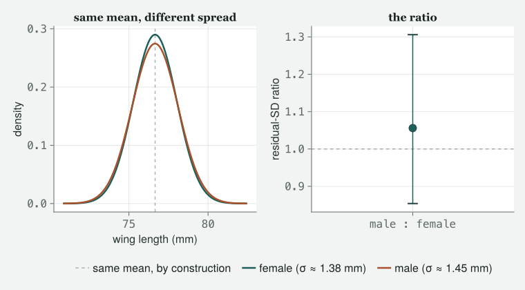

A coda, not a rung: no new constant is freed here. One figure below refits a model Class 2 already ran, to show what rung eleven means; the rest is prose, and the constants still waiting are one level up, two of them with chapter numbers already.
Draft
Draft. All ten classes of version 1, Appendix A, the preface and the coda are written and their code runs. This page fits one model, in one code cell, to draw its one figure — the same location-scale model Class 2 fitted, refitted here on the same archived sparrows — and otherwise runs no code and prints no other numbers. The prose is still being revised.
Engines DRM.jl 0.7.1 at 4d9248f88 (Julia 1.10.0) · drmTMB 0.7.0 (R 4.6.0) Provenance This page fits one model, once, in one Julia cell: the location-scale model Class 2 already fitted (Wing ~ Tarsus + Sex, with Sex in σ), refitted here on the same 171 archived Lundy Island sparrows so the rung-eleven figure and the numbers beside it come from this page’s own run. It makes no claim about a model that a chapter of this book has not already fitted. The three references in Further reading were checked on 2026-09-07 against OpenAlex, an open catalogue of research papers. Caveat The two rungs described here as version two are an outline, not written chapters; the plan for the whole climb is linked from the landing page. The two engine limitations mentioned below are known and have been reported to the engine’s authors; they may have been fixed by the time you read this, so check the engine’s own page for their current state.
This is a coda, not a rung. Every other page in this book freed something the page before it held fixed; this one frees no new constant — the one model behind its one figure is a model Class 2 already fitted. It is here because the climb has a shape, and the shape does not stop where the book does.
What you have been doing for ten chapters is taking a constant out of a model and letting the data have an opinion about it. The noise had one shape; you let the family choose it. The spread was a fixed function of the mean; you let a predictor into it. Rows were strangers; they stopped being strangers. Slopes were shared; they stopped being shared. Groups were independent of one another; you handed the model a matrix saying how they are related.
There are more constants. You have been looking at four of them all book without being told.
The same constants reappear
σ — the spread of the noise — held at one number. In Class 4 you moved the spread — but you moved it to repair something: the family had lied about how much scatter a given mean allows, and letting σ depend on a predictor was the fix. The next rung asks the question the other way round. Suppose the spread is what you actually care about. Suppose the interesting biology is that one group is more variable than another, at the same mean; that a treatment does not shift the average and does tighten the distribution; that predictability is the trait. Then σ is not a nuisance to be repaired, it is the estimand — the quantity you set out to estimate — and it gets a linear predictor (a right-hand side of its own, the sum of predictor effects that every model in this book has had for the mean), standard errors and an interval of its own, exactly as the mean does. That is rung eleven, modelling the spread itself, and the family of models it belongs to has been in the literature for two decades under the name location–scale — location is the mean, scale is the spread, and both get a model (Rigby & Stasinopoulos 2005). You already know how to read its output: you have been reading a mu block and a sigma block side by side since Class 4.
Rung eleven is not hypothetical in this book. Class 2 already fit exactly this model on exactly this question, and showed the σ side of it only as a peek. Fit it again here, on the same 171 archived Lundy Island sparrows, so what follows comes from this page’s own run and not from a memory of Class 2’s.
Females vary by about 1.38 mm around their line; males by about 1.45 mm — a little more, not less, the same finding Class 2 reported. Adding Sex to σ moves the AIC by 1.75 against the mean-only model — it does not pay for itself — and the male:female ratio of spread comes out at 1.056, 95% interval [0.854, 1.306], an interval that still sits on both sides of 1. Refit on the same birds, the verdict has not moved: not disproved, not detected.
zspread =4*max(sigma_ls[1], sigma_ls[1] * sigma_ls[2])zgrid =range(coda_center - zspread, coda_center + zspread, length =400)dens_f = Distributions.pdf.(Distributions.Normal(coda_center, sigma_ls[1]), zgrid)dens_m = Distributions.pdf.(Distributions.Normal(coda_center, sigma_ls[1] * sigma_ls[2]), zgrid)fig =Figure(size = (760, 420))ax1 =Axis(fig[1, 1]; xlabel ="wing length (mm)", ylabel ="density", xticks =WilkinsonTicks(4), title ="same mean, different spread")vlines!(ax1, [coda_center]; color = (:grey, 0.6), linestyle =:dash, label ="same mean, by construction")lines!(ax1, zgrid, dens_f; linewidth =2.5, label ="female (σ ≈ $(coda_sigma_f) mm)")lines!(ax1, zgrid, dens_m; linewidth =2.5, label ="male (σ ≈ $(coda_sigma_m) mm)")ax2 =Axis(fig[1, 2]; xticks = ([1], ["male : female"]), ylabel ="residual-SD ratio", title ="the ratio")xlims!(ax2, 0.5, 1.5)hlines!(ax2, [1.0]; linestyle =:dash, color = (:grey, 0.6))rangebars!(ax2, [1], [coda_lo], [coda_hi]; whiskerwidth =14, color =Cycled(1))scatter!(ax2, [1], [coda_ratio]; markersize =16, color =Cycled(1))# legend outside both axes, below, so it can never hide a group or crowd either# panel (reviewer: pond P05 sat under it)Legend(fig[2, 1:2], ax1; framevisible =false, orientation =:horizontal)fig

Figure 1: Rung eleven, drawn from a real fit rather than described: the location-scale model Class 2 fitted (Wing ~ Tarsus + Sex, with Sex in σ), refitted on this page on the same 171 archived Lundy Island sparrows. Left: each sex’s fitted residual spread around the line, as Normal curves centred on the same value — the model’s own fitted mean wing length for a female at the sample’s mean tarsus — by construction, so only spread differs in this panel; the real fitted means do differ by sex (males have longer wings on average, carried by the μ side of the model, not shown here), which is a different, separate finding from the one this figure is about. Right: the male:female ratio of that spread, with its 95% interval; the dashed line marks equal dispersion. The interval straddles it: the male curve is a little wider, but this sample cannot tell that apart from no difference at all.
The second response, set to absent. Every model in this book has one thing on the left of the tilde, the ~ in the formula that separates the response from what predicts it. That is a constant too, and it is the one people notice least, because a spreadsheet with two measured columns invites you to fit two models and compare the two answers — which is not the same analysis and does not answer the same question. Fit them jointly and a new parameter appears that neither separate fit contains: the correlation between the two responses, after everything on the right of the tilde has had its say. Then free that: let the correlation itself depend on a predictor, so that two traits can be tightly coupled in one environment and loose in another. That is rung twelve, and it is the last one in the plan, because once the correlation between two responses is a thing you model rather than a thing you assume, there is very little left in an introduction that is still nailed down.
The effect-size row. Here is the same idea in a different building. Change what a row of your data frame is: not an animal, but a published study’s estimate of an effect. The model looks familiar — an intercept, maybe a moderator or two (a predictor that explains why studies differ), a random effect over studies — and one thing is new and changes everything. Each row arrives with its own sampling variance — how uncertain that study’s estimate is — already known, computed from that study’s sample size rather than estimated from the data. So the model has a variance you must not estimate sitting immediately beside variances you must, and every heterogeneity statistic you have ever read — the numbers, such as I², that say how much studies disagree beyond chance — is a statement about the ratio between them. Everything you learned in Class 8 about which estimator produced a variance component (the share of the variation assigned to one source, such as differences between studies) applies with more force here, not less, because the quantity people actually publish is a ratio of variance components.
The phylogeny as a relatedness matrix. And here is the same idea again. Class 10 hands the model a matrix that says how the levels of a random effect are related, and a phylogeny is one of the four faces that single idea wears — beside a pedigree (a family tree of known parents), a spatial neighbourhood, and a taxonomy. So the machinery of comparative biology is already in your hands when you finish this book. What is not is the discipline built on top of it: which tree, whose tree, what to do when the tree is uncertain or the trait is not continuous or the branch lengths are a guess. That is a field, not a chapter, and it is the same field as the paragraph above it — non-independence from shared ancestry and non-independence from shared effect sizes are one statistical problem in two sets of clothes (Hadfield & Nakagawa 2010). They belong together in a second book, and that is where they are going.
What version two adds
Version two of the book is those first two paragraphs: rung eleven and rung twelve, written the way every other rung was written, with a class, an argument and numbers that come from code that ran. The outline for both is already fixed (it is linked from the landing page), and it is deliberately the end of the ladder rather than the middle — a reader who can model the spread and the correlation between two responses has run out of things an introduction was hiding.
Version two of the engines is a shorter and less romantic list, and it is worth naming honestly, because this book’s own chapters ran into it. Two things the Julia engine cannot yet do that its R twin can: fit a random slope — a slope allowed to differ from group to group — when the outcome is yes/no, which is why Class 7 works on a continuous outcome; and take an offset — a known amount of effort or exposure per row, entered with its slope fixed at one — which is why Class 4 carries the exposure as an ordinary predictor in Julia and shows the offset in the R box. Both are known limitations, reported to the engine’s authors. Neither is a design decision; both are work.
There is a general lesson in that list, and it is the one to take away. A capability existing somewhere in a package’s code is not the same as a capability that is tested, documented and safe to teach. This book only teaches the second kind, which is why it is shorter than the engines are, and why a chapter sometimes steps around a feature that technically already runs.
What this book did not do
An introduction earns the word by leaving things out. Here is the list, so that nobody has to discover it the hard way.
It taught one engine, not an ecosystem. You can fit these models; you cannot yet read a colleague’s lme4 script fluently, and the day a referee asks why you did not use glmer — the function in lme4 that fits these models — you will want more than this book gave you. The comparison boxes were a bridge, not a course.
It is frequentist throughout. There is no prior anywhere in it — no statement of belief entered before the data, which is the ingredient that makes an analysis Bayesian. A great deal of modern practice in exactly these models is Bayesian, and nothing here argues against that; the book simply does not go there.
It taught models, not designs. How to fit the thing you measured, not how to decide what to measure, how to randomise it, or when a coefficient is allowed to be called an effect. Those are different books and they are more important than this one.
It stayed linear in the predictors. A link function — the bend that maps a straight-line predictor onto the scale of the data — bends the curve at the end; nothing here bends it in the middle. Smoothers and splines — curves the data are allowed to bend into — and genuinely non-linear mean functions are absent.
It fenced off meta-analysis and phylogenetic comparative methods — deliberately, as the preface says, and as the section above explains.
It worked on small data. Every file behind these chapters is small enough to open in a spreadsheet and read. Nothing in this book will tell you what breaks when a random effect has a hundred thousand levels, or what to do about it.
It used simulation as a habit, not as a subject. Appendix A is a thread pulled tight, not a course in Monte Carlo methods (answering a question by drawing random numbers many times); there is nothing here about study design by simulation, or about power — the chance a study detects an effect that is really there.
And it freed one constant at a time. That is the deepest omission, and the one worth thinking about longest. Real data do not present you with one released constant and everything else nailed down. They arrive overdispersed (more scattered than the family allows) and clustered and with a slope that varies and with groups that are related to one another, all at once, and the skill this book cannot teach you in ten chapters is deciding which of those to free first, and which to leave alone because your sample size has not earned it.
The last morning. Four chairs, and for once nobody has a laptop open.
TOTO has brought biscuits, which is how everyone knows it is the end of
term. JARO has come up from the floor below without being asked.
Momo
So the honest summary is that you have taught me to take things out of a
model, and now you are telling me there are more things.
Itchy
The honest summary is that there is always one more constant. That is
not a flaw in the book, it is what modelling is. The difference
between you in Class 1 and you now is not that you know more models. It
is that when somebody hands you a result you can ask which assumption is
doing the work, and then go and check.
Toto
I mostly learned to read the error messages.
Itchy
(to the room) That is the correct answer and I want it minuted.
Eddie
What do we do with the two chapters that are not written?
Itchy
Wait for them, or beat me to them. Everything in this book is open — the
text, the data, the code that made every number on every page. The point
of building it that way is that you do not have to take my word for any
of it, including the parts I got wrong.
Jaro
(standing, taking a biscuit) Then the only thing left to say is
the thing you have been saying since the first hour.
Itchy
Fit it. Look at it. Say which estimator printed it. Then go and free the
next one.
Further reading
Three, chosen as doors rather than as reading. The details of all three
were checked on 2026-09-07 against OpenAlex, an open catalogue of
research papers.
Rigby, R. A. & Stasinopoulos, D. M. (2005) “Generalized Additive Models for Location, Scale and Shape”, Journal of the Royal Statistical Society Series C (Applied Statistics) 54(3):507–554. doi:10.1111/j.1467-9876.2005.00510.x. The door to rung eleven. The framework in which every parameter of a distribution — not only its mean — gets its own linear predictor. Read the first sections for the idea and skim the rest; what you want from it is the habit of asking what else in a distribution could have a model attached to it.
Hadfield, J. D. (2010) “MCMC Methods for Multi-Response Generalized Linear Mixed Models: The MCMCglmm R Package”, Journal of Statistical Software 33(2). doi:10.18637/jss.v033.i02. The door to rung twelve, and the clearest widely read account of what a multi-response mixed model is: what the extra parameters — the correlations between the responses — mean and how the model is set up to estimate them. It is Bayesian, which this book is not; read it for the structure of the model rather than for the inference.
Hadfield, J. D. & Nakagawa, S. (2010) “General quantitative genetic methods for comparative biology: phylogenies, taxonomies and multi-trait models for continuous and categorical characters”, Journal of Evolutionary Biology 23(3):494–508. doi:10.1111/j.1420-9101.2009.01915.x. The door to the second book, and the paper that makes the claim this coda leans on: that a pedigree, a phylogeny and a taxonomy are the same object handed to the same model. Read it once you have finished Class 10 and the four faces have stopped looking like four things.